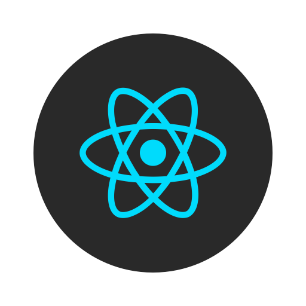
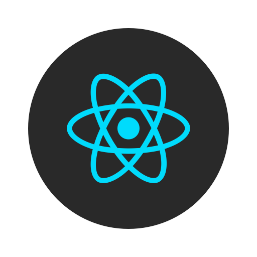

Votre visite a été notifié sur ce site !
David Crétøis 🚀
David, Sourd, 17 ans, programmeur compétiteur Google Code-In compétition et Code Jam avec Google Developers, maîtrisé de Node.js, Python, C et C++ et créateur de ce site. Joueur d'échecs Elo: 1652 Catégorie 2 sur Chess.com
A propos de moi
J’ai 17 ans, je suis un lycéen en Terminale STI2D en option SIN, je pense vouloir devenir un ingénieur en informatique, ou bien en électronique. Parfois, je rêve de concevoir des choses ou bien innover pour aider à réduire l’énergie durable grâce aux progrès technologiques.
Formation en cours
Lycée Marcel Sembat
Au lycée Marcel Sembat, en seconde, ça fut le plus difficile de l’année scolaire que j’ai eu, j’avais choisis la voie générale pour entrer la voie technologique en STI2D. En français, c’est la matière la plus difficile, j’avais au un choc parce que je comparais au collège par rapport au lycée que le lycée c’est très difficile. ma moyenne générale de l’année Seconde : 11,50. J’étais encore accompagné d’une AVS et des interprètes qui me permettent de tout réussir.au lycée. J’avais beaucoup travaillé tous les soirs en essayant de réviser les leçons mais c’était difficile, je n’y arrivais pas vraiment, j’avais découragé. Mais au fur de la fin d’année, c'était de plus en plus d'adapter mais reste mon résultat constant.J’étais content de cet résultat. La matière physique et l’anglais, les matières favorables mais difficile de d’adapter en cours et aux contrôles. Au dehors du lycée, j’ai appris beaucoup de langages de programmation : Python, HTML/CSS, Node.js et JavaScript. J’ai beaucoup coder de lignes en HTML.
Cette année, en première, j’ai réussi à rentrer en STI2D, la bonne nouvelle, c’est que j’ai bien choisis ma voie technologique et que j’ai bien travaillé même c’était dur avec 12,5 moyenne générale, je pouvais faire mieux mais malheureusement, je n’ai pas pu doubler la quantité d’heures de travail et de concentration en raison des histoires personnels en relation avec une surveillante à l’internat, qui m’a fut le chaos pour moi qui m'a donné une faiblesse et une manque de motivation de travailler et découvrir.
Formations

Collège Jean Lecanuet
Au collège Jean Lecanuet, diplômé d’un brevet avec mention bien, ma matière favorable est l’anglais avec une meilleure moyenne anglais : 20,00. J’avais un peu de difficulté en maths parfois ça monte et parfois ça chute comme en physique-chimie. En atelier informatique, j’étais vraiment bon en programmation, je passionne le logiciel Scratch en tant débutant. En dehors du collège, je jouais beaucoup aux jeux vidéos et je découvrais beaucoup de cultures.
En 3ème, j’avais une très bonne compétence linguistique : Compréhension écrite en anglais, c’est à dire que je peux bien lire des texte en anglais ou même des films sous-titrés anglais. J’étais accompagné d’une AVS et des interprètes qui me permettent de réussir à écouter les cours et faciliter mes efforts à l’écoute.
Loisirs
J’aime beaucoup jouer aux jeux vidéos aux temps libres, je joue à League of legends et à Minecraft à part, j’ai créé un serveur avec Java entre potes. Je lis régulièrement pour améliorer mes connaissances et mon écrit Je regarde beaucoup des films et des séries tous les soirs avant dormir. Je rêve de voyager à travers l’asie occidentale et aussi en Etats-Unis. Je cuisine presque tous les soirs chez moi. Alors, j’aime apprendre beaucoup de choses et les autres cultures. J’aime apprendre de plus en plus sur la technologie et aussi de le programmation.


Langues maitrîsées


Langages informatiques maîtrisés


 



Badges numériques


Echecs en ligne